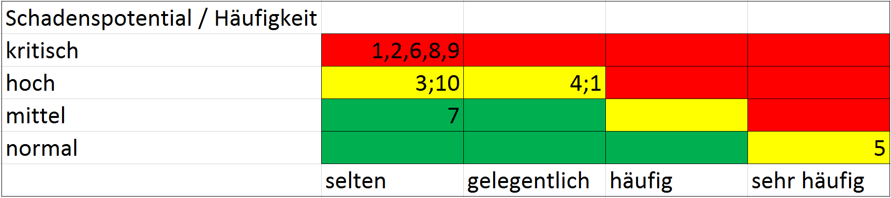

b)
VIVA-DS unterscheidet drei Grundrisiken, die es zu vermeiden gilt:
Verlust der:
- Verfügbarkeit
-
Hierbei soll sichergestellt werden, dass Daten dem User zugänglich sind und dies nicht durch nicht-funktionierende Soft- bzw. Hardware gefährdet wird.
Ein konkretes Risiko wäre hier bspw. ein Krypto-Trojaner, auch ransomware genannt. Ein solcher Trojaner verschlüsselt Daten auf der Festplatte des Users und will zur Wiederherstellung des Zugangs oft eine Bezahlung.
Dies soll durch regelmäßige Backups, Kontrolle der Server-Infrastruktur und ein entsprechendes Zugriffsrechtekonzept gewährleistet werden.
- Integrität
-
Die Daten des Unternehmens sollen nicht durch unbefugte Dritte modifiziert werden. Auch die Soft- bzw. Hardware soll nicht verfälscht werden.
Die Integrität der Daten soll durch eine gut konfigurierte Firewall, Verwendung von open-source Software (je nach Möglichkeit) und ein entsprechendes Zugriffsrechtekonzept sichergestellt werden.
Hierbei können zwei Arten von unbefugtem Zugriff unterschieden werden: interner und externer.
Externer unbefugter Zugriff könnte bspw. durch einen Hacker geschehen, der sich durch schwache Passwörter, Sicherheitslücken oder sog. backdoors in Software in unser System eingeschleust hat und nun Daten modifiziert oder im Extremfall löscht.
Interner unbefugter Zugriff könnte durch einen Angreifer, der sich z.B. als Personalchef ausgibt, geschehen. Dabei könnte der Angreifer einem MA zuschauen, wie er sein Passwort eingibt und sich dadurch Zugriff zum System verschaffen.
- Vertraulichkeit
-
Bei der Vertraulichkeit soll darauf geachtet werden, dass nur berechtige Personen Zugriff auf Daten haben. Konkret sollen also alle User, die nicht auf der Liste der Zugriffsberechtigten haben, keinen Zugriff auf die Daten haben.
Dies soll insbesondere durch ein Zugriffsrechtekonzept sowie Schulung der Mitarbeiter realisiert werden.
- Authentizität
-
Authentizität ist die Kontrolle der Echtheit von Daten. Es soll sichergestellt werden, dass z.B. ein Dokument aus der genannten Quelle kommt. Insbesondere bei Daten, die von Dritten stammen, ist dies von hoher Bedeutung.
Dies kann durch verschlüsselte Kommunikation oder Zertifikate sichergestellt werden. Bestenfalls eine Kombination aus beidem.
Hier noch was zu Datenschutz
Quelle
c)
- Risiko #1: Physischer Einbruch in Serverraum
- Risiko #2: Feuer im Serverraum
- Risiko #3: Ein Einbrecher dringt in Büros ein
- Risiko #4: Die Intrusion Detection entdeckt unbefugten Zugriff auf Datenbank von außen
- Risiko #5: Ein Mitarbeiter der Personalabteilung lädt Dateien aus dem Internet herunter
- Risiko #6: Die Datenbank ist korrupt
- Risiko #7: Die Datenbank enthält falsche Werte, wie Urlaubstage = 9999
- Risiko #8: Ein Hacker verschafft sich Zugriff zum System und entwendet Daten
- Risiko #9: Ein Mitarbeiter lädt einen Krypto-Trojaner runter, der die DB verschlüsselt
- Risiko #10: Die Hardware der Server fällt aus

d)
Kommunikation intern:
Alle Mitarbeiter sollen zur Kommunkation firmenintern einen hauseigenen,verschlüsselten VPN-Dienst nutzen.
Hierdurch wird die Echtheit (Authentizität) der Kommunikation, bzw. der übertragenen Daten,
sichergestellt. Außerdem kann die Kommunikation der Mitarbeiter geloggt werden, was in Streitfällen als Beweis
genutzt werden kann.
Kommunikation extern:
Zur Kommunikation bspw. mit dem www oder E-Mail soll der Mozilla-Thunderbird Mail Client und der Mozilla Firefox Web Browser
mit entsprechenden Add-Ons (
siehe Übungsblatt 3 Aufgabe 3) genutzt werden.
Des Weiteren soll eine Firewall installiert und konfiguriert sein.
Datenbank-System
Als DBS soll FireDB eingesetzt werden, da dies als open-source DBS vertrauenswürdiger als verbreitete DB-Systeme wie
Microsoft Access ist. Da in der DB Personaldaten gespeichert werden ist ebenfalls auf den Zugriff zu achten.
Daher soll nur verschlüsselt mit der Datenbank kommuniziert werden dürfen.
Zudem sollte täglich ein Backup der DB angefertigt werden und das Backup vervielfältigt werden.
Virenschutz
Als Virenschut soll auf den/dem Serversystem(en) selbst ClamAV installiert werden. Am gateway soll auf ein geeignetes,
von ClamAV verschiedenes, Anti-Viren-Programm installiert werden. Dadurch minimieren wir das Risiko, dass ein
Virenschutzprogramm einen Virus nicht erkennt.
Ebenfalls sollen alle Mitarbeiter dazu angehalten werden, aus dem Internet heruntergeladenen Dateien mittels
VirusTotal
zu überprüfen.
Schutz des Serverraums
Der Serverraum soll mit vernetzten Brandmeldern ausgestattet werden, die im Brandfall von sich aus die Feuerwehr verständigen.
Ebenfalls sollen beim Zutritt und beim Verlassen des Serverraums die entsprechenden Personen gewogen werden, damit diese
nicht unbemerkt etwas in den Serverraum schmuggeln.
Ferner soll gegen Einbrecher ein Bewegungsmelder und eine Wärmebildkamera installiert werden.